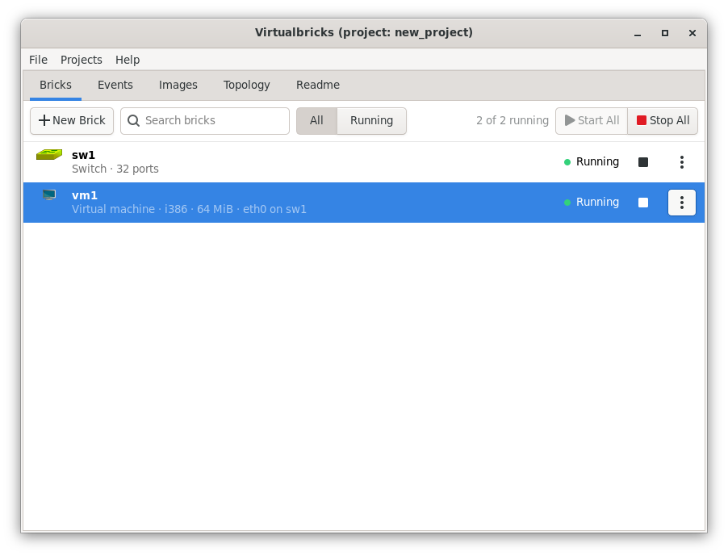

Make your first lab
A lab is a project: its bricks, the events that start and stop them,
and the disk images of its machines. The smallest useful one is a switch
and a virtual machine plugged into it. You need a disk image for the
machine, as a .qcow2 file with a system
installed.
In the Bricks tab, click New Brick and choose Switch. The switch is named
sw1, and its settings show: click OK.Click New Brick again and choose Virtual machine. It is named
vm1, and its settings show.Under Disks, click Add Disk. In the list of images of the new disk, choose Add an Existing Image…, then the file of your disk image.
Under Network, click Add Card, and choose
sw1in Plugged into.Click OK.
Click the start button of
vm1, in its row. The switch starts first, since the machine plugs into it, and both rows say Running.


The disk is a Private copy of the image: the machine writes its changes to a file of its own, in the folder of the project, and the image stays as it is. See Disk images.
Virtualbricks saves the project every three minutes and when it quits. To save it now, choose Projects › Save, or press Ctrl+S.
The same lab from the console of Virtualbricks:
image add debian ~/images/debian.qcow2
brick new switch
brick new vm
brick set vm1 hda_image=debian
brick card add vm1 plug sw1
brick start vm1See also
What each brick is for, and the program that runs it.
The disks, network cards and consoles of a virtual machine.